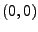
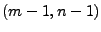
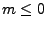
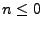

Next: Function: slice Up: The Array API Previous: Function: create2dCol Contents Index
/* C */
struct sidl_double__array*
sidl_double__array_create2dRow(int32_t m, int32_t n);
// C++
static sidl::array<double>
sidl::array<double>::create2dRow(int32_t m, int32_t n);
C FORTRAN 77
subroutine sidl_double__array_create2dRow_f(m, n, result)
integer*4 m, n
integer*8 result
! FORTRAN 90
subroutine create2dRow(m, n, result)
integer (selected_int_kind(9)), intent(in) :: m, n
type(sidl_double_2d), intent(out) :: result
// Java
// isRow should be false to get a column order array
public Array2(int s0, int s1, boolean isRow);
This method creates a dense, row-major, two-dimensional array of ints with a lower index of  and an upper index of . If  or , this method returns NULL. This is defined primarily as a convenience for C and C++ programmers; Fortran programmers should note that this subroutine creates arrays whose lower index is 0 not like standard Fortran arrays whose lower index is 1.